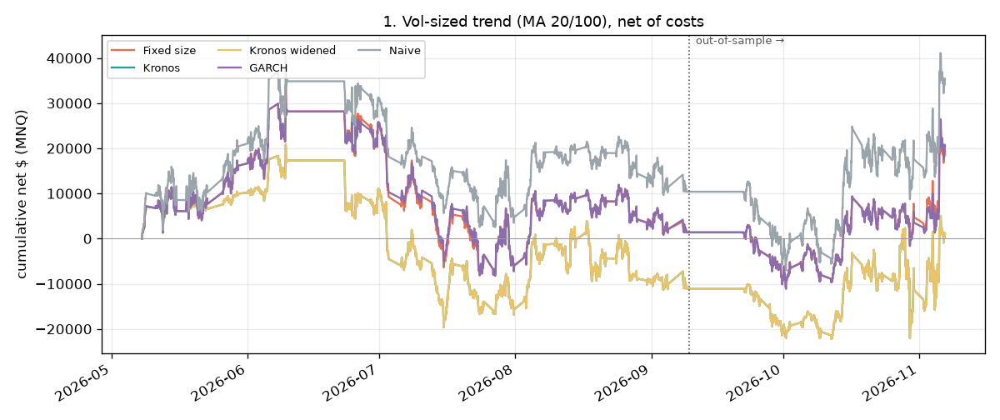
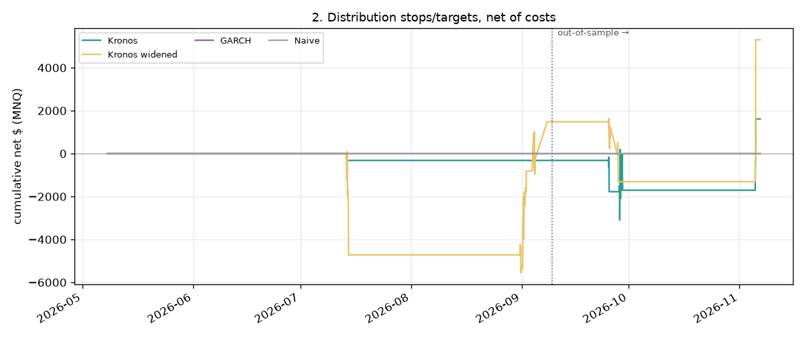
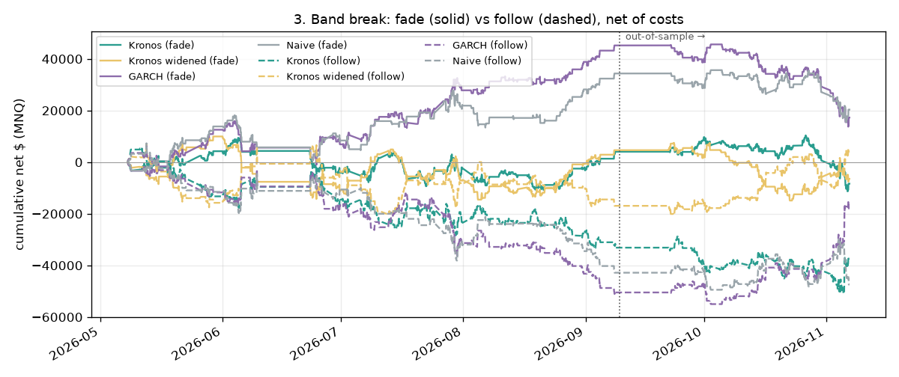

Daily volatility forecasts made from the 07:00–08:00 New York bar, each using only data available then. Loading…
1pm → 1pm move vs forecast range
last 250 forecasts · Actual move from the 1pm London close to the same time the next trading day (23 trading hours)
90% range95% rangeinside 90%outside 90%scheduled release in the window
Cash session 09:00–16:00 NY
2:00–9:00pm London · Move from the 9:00am New York close to the 4:00pm close vs the measured 90% multiplier × the forecast's cash σ
90% cash rangeinsideoutsiderelease that daysession high/low went outside
Hit rates
share of days the actual move landed inside each range (target = the range's %)
1pm → 1pm (23 hours)
Cash session
Rolling 60-day hit rate (90% range)
dashed line = the 90% target
1pm → 1pmcash session90% target
Kronos lab (Phase 6)
research backtest, May–Nov 2026, hourly origins · Tap to open
The lab compared four +24h band sources on 825 hourly forecasts (every 3rd bar, May–Nov 2026; the multiplier for "Kronos widened" was fitted on the first two-thirds). Share of actual closes inside P10–P90, target ≈ 80%:
band source
all +24h
in-sample
out-of-sample
avg +24h width
Kronos
46%
49%
40%
675 pts
Kronos widened (×2.16)
77%
80%
70%
1,458 pts
GARCH
84%
84%
84%
998 pts
Naive (20-day realised vol)
83%
86%
76%
979 pts
band source
+1h
+6h
+24h
Kronos
51%
50%
46%
Kronos widened
79%
81%
77%
GARCH
80%
80%
84%
Naive
84%
83%
83%
Verdict: raw Kronos's band was far too narrow; GARCH was closest to 80% out of sample. That's why the daily page used a calibrated GARCH (HAR-RV since Nov 2026) and keeps Kronos as an experimental toggle. Equity curves for the three test rules (MNQ, after costs; research only, not investment advice):

1 · Vol-sized trend (MA 20/100, always in the market)

2 · Distribution stops and targets

3 · Band break: fade vs follow
Caveats from the lab: one ~6-month period, 30 Kronos paths per forecast, estimated roll gaps before Sep 2026, delayed unofficial Yahoo data, and no correction for trying several rules.